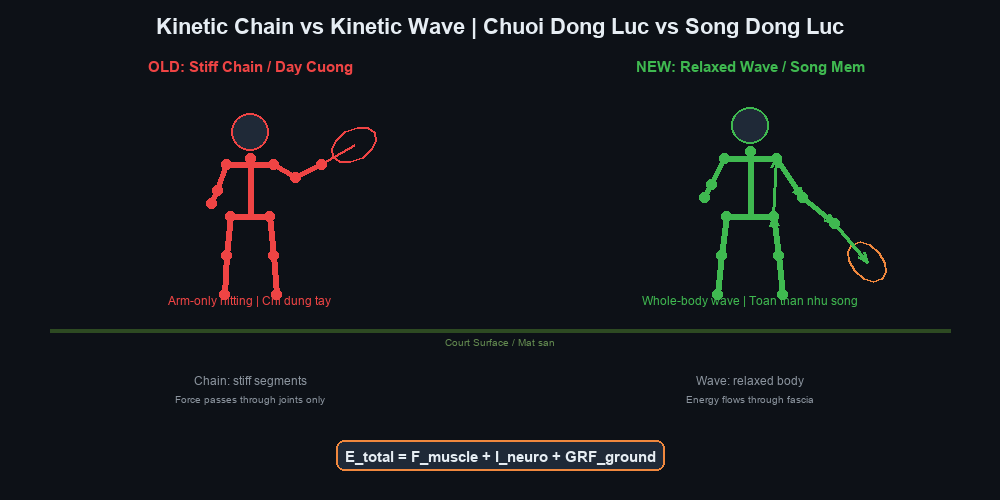
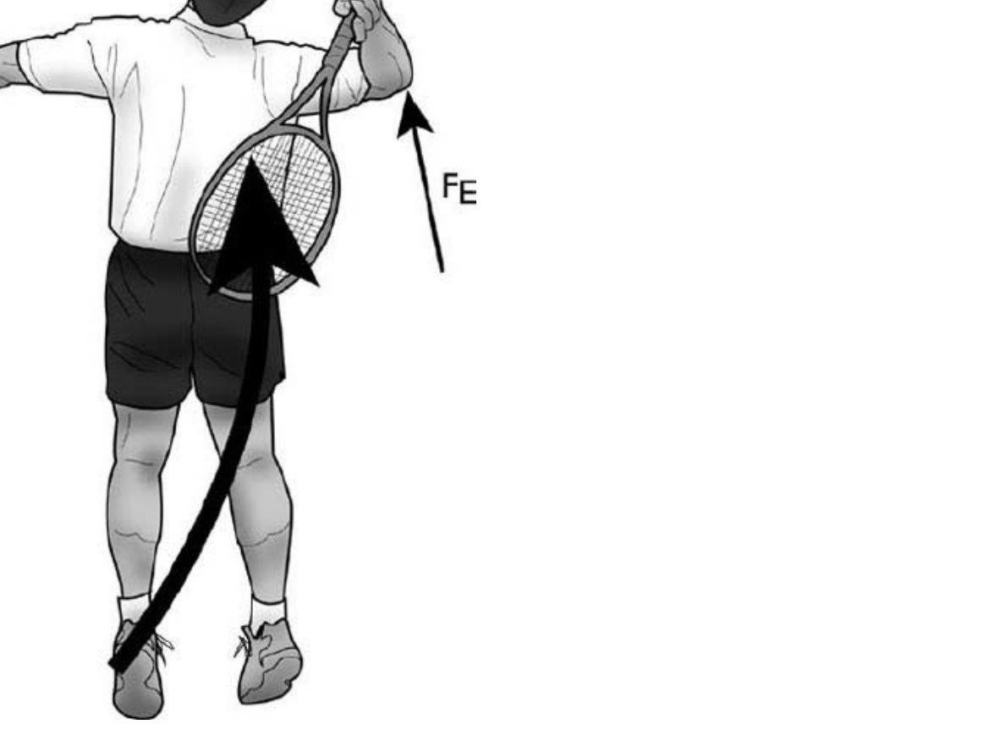
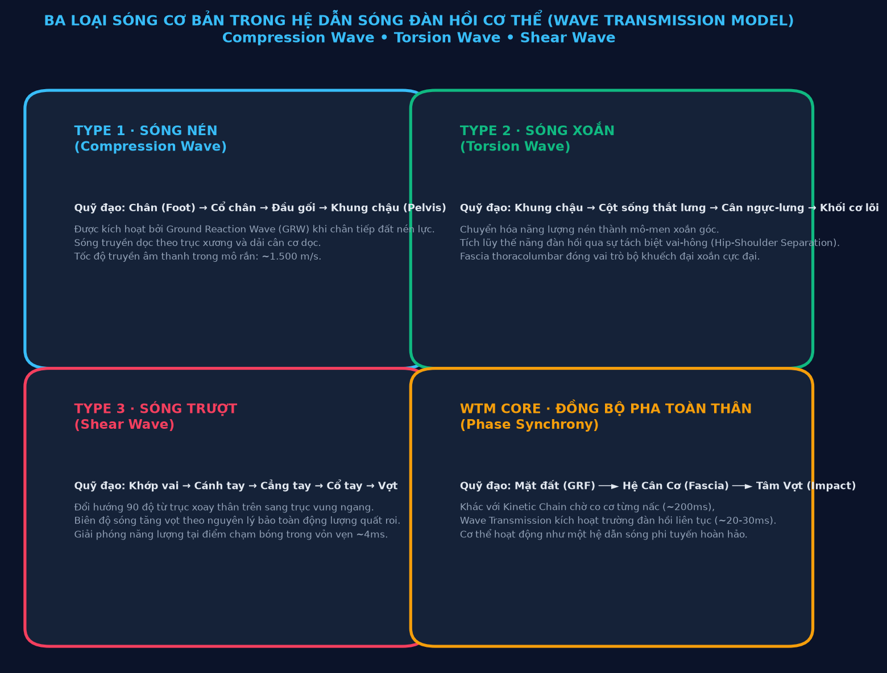
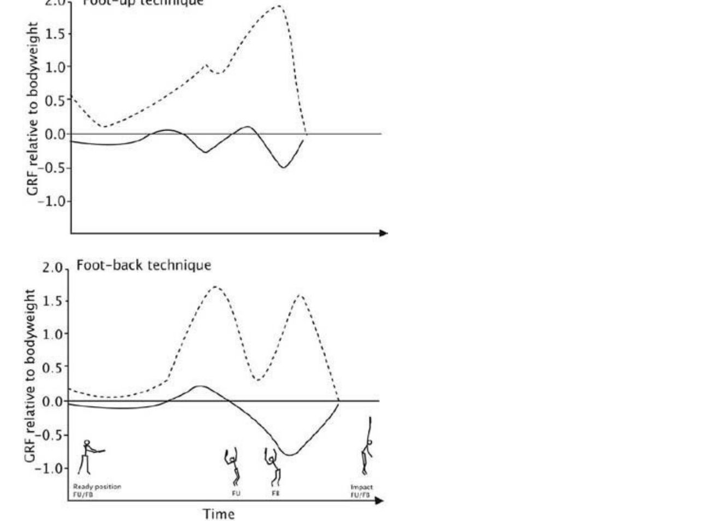
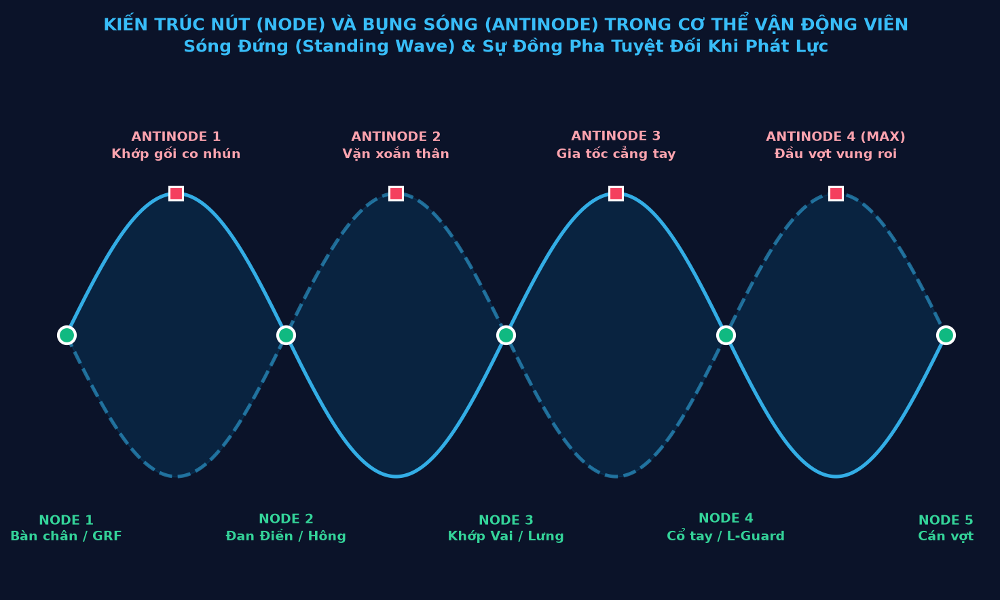
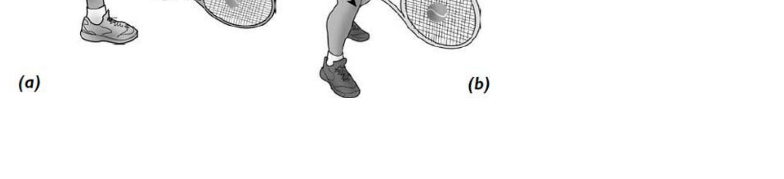
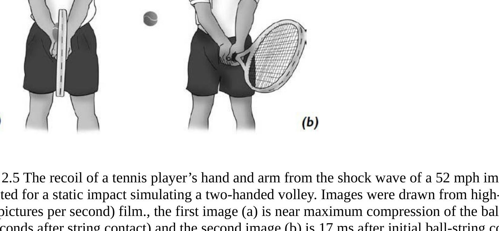
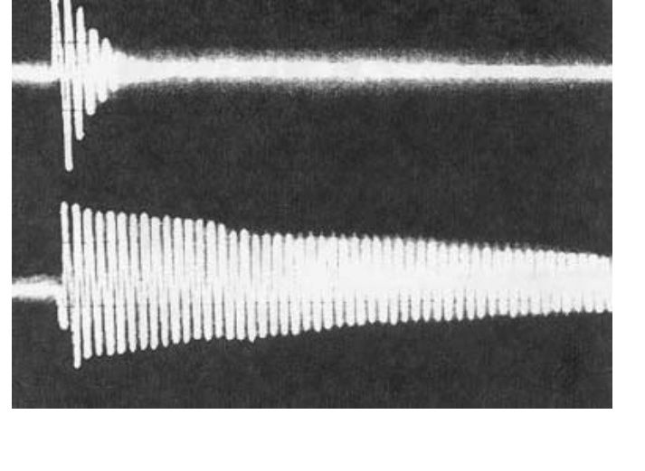
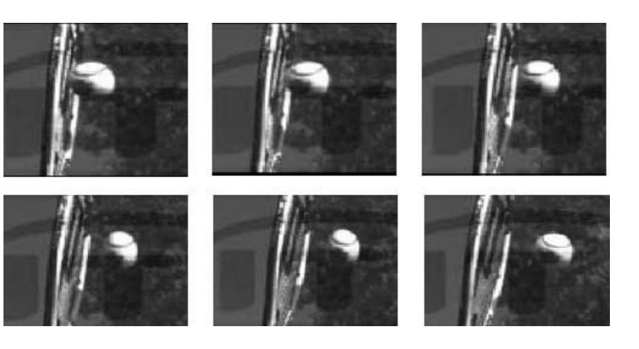

Nghiên Cứu Truyền Sóng Trong Cú Đánh Quần Vợt
Bản dịch Việt ngữ này chỉ dùng cho mục đích học tập cá nhân, phi thương mại. Bản quyền tác phẩm gốc thuộc về tác giả và nhà xuất bản.
Mục Lục Báo Cáo
- Phần 1: Bản Chất Sóng Cơ Học & Giới Hạn Kinetic ChainPart 1: The Nature of Mechanical Waves and the Limits of the Kinetic Chain
- Phần 2: Hệ Cân Cơ Myofascial & Phát Kình Thái Cực QuyềnPart 2: The Myofascial System and Taijiquan Fa Jin
- Phần 3: Động Lực Học Sóng Forehand & Sự Kiện Chạm BóngPart 3: Forehand Wave Dynamics and the Contact Event
- Phần 4: Giáo Trình Huấn Luyện Cảm Thụ Sóng & Điều Khiển Thần KinhPart 4: The Wave-Perception and Neural-Control Training Programme
PHẦN 1: BẢN CHẤT SÓNG CƠ HỌC & GIỚI HẠN CỦA MÔ HÌNH KINETIC CHAIN TRUYỀN THỐNG
— Viện Nghiên Cứu Quần Vợt Tương Lai (Tennis Future Lab) “The traditional force-transmission model describes the body as a chain of discrete mechanical links. Yet at the level of refined, high-speed movement, the body operates as a continuous non-linear elastic waveguide. Energy is not passed link by link; it is accumulated, modulated and synchronised through the whole-body myofascial network.” — Tennis Future Lab
1.1. Khái Luận Nghiên Cứu: Cơ Thể Người Như Một Hệ Dẫn Sóng Đàn Hồi Phi Tuyến1.1. Research Premise: The Human Body as a Non-Linear Elastic Waveguide
Trong suốt nhiều thập kỷ, nền khoa học huấn luyện thể thao hiện đại đã tiếp cận chuyển động con người dựa trên lăng kính của cơ học Newton cổ điển và kỹ thuật robot. Cơ thể được hình dung như một hệ thống các thanh đòn cứng (xương) nối với nhau qua các khớp xoay bản lề, được kéo giật bởi các pít-tông sinh học (cơ bắp).
For many decades, modern sports-training science has approached human movement through the lens of classical Newtonian mechanics and robotics. The body was imagined as a system of rigid levers (bones) joined by hinge joints, yanked by biological pistons (muscles).
Mặc dù mô hình Chuỗi động học liên hoàn (Kinetic Chain) đã giải thích được một phần nguyên lý cộng dồn vận tốc từ gốc đến ngọn, nó bộc lộ những hạn chế căn bản khi áp dụng vào những cú đánh có tốc độ cực đại trong quần vợt chuyên nghiệp hiện đại. Những cú vung vợt với vận tốc đầu vợt vượt quá 160 km/h của Carlos Alcaraz hay Jannik Sinner diễn ra trong một khung thời gian ngắn đến mức các phản xạ thần kinh điều khiển cơ bắp thông thường không thể kịp kích hoạt tuần tự.
Although the Kinetic Chain model explained part of the principle of velocity accumulation from root to tip, it reveals fundamental limitations when applied to the extreme-speed strokes of modern professional tennis. Swings with racquet-head velocities exceeding 160 km/h by players such as Carlos Alcaraz or Jannik Sinner occur in a time frame so short that ordinary nerve reflexes controlling muscle cannot activate sequentially in time.
Nghiên cứu này đề xuất một khung lý thuyết đột phá: Wave Transmission Model (WTM) — Mô hình Truyền sóng Động lực học. Theo mô hình này, cơ thể không phải là một cỗ máy cơ khí gồm các mắt xích khô cứng, mà là một môi trường dẫn sóng đàn hồi phi tuyến liên tục (Continuous Non-linear Elastic Waveguide). Toàn bộ khối cơ, gân, xương và đặc biệt là hệ thống màng cân cơ (fascia) tạo thành một trường dẫn truyền dao động cơ học tinh vi.
This study proposes a breakthrough theoretical framework: the Wave Transmission Model (WTM). Under this model the body is not a mechanical machine of dry rigid links but a continuous non-linear elastic waveguide. The entire mass of muscle, tendon, bone and especially the fascial system forms a subtle field for conducting mechanical vibration.

1.2. Tại Sao Mô Hình Đòn Bẩy Rời Rạc Chưa Đầy Đủ?1.2. Why the Discrete Lever Model Is Incomplete
Từ "chuỗi" (chain) trong thuật ngữ Kinetic Chain mang hàm ý một sự tuần tự tuyến tính: mắt xích A kéo mắt xích B, mắt xích B kéo mắt xích C. Trong giáo trình tennis truyền thống, người ta thường dạy học viên: "Đạp chân, xoay hông, xoay vai, vung cánh tay, Động tác sấp cổ tay / xoay trong cẳng tay."
The word 'chain' in the term Kinetic Chain implies a linear sequence: link A pulls link B, link B pulls link C. In traditional tennis instruction, students are taught: 'push off, rotate the hips, rotate the shoulders, swing the arm, pronate the forearm.'
Tuy nhiên, cơ sinh học thực nghiệm chỉ ra ba nghịch lý nghiêm trọng của mô hình chuỗi đòn bẩy:
However, experimental biomechanics reveals three serious paradoxes of the lever-chain model:
- Nghịch lý thời gian dẫn truyền thần kinh: Thời gian từ khi kích hoạt điện thế màng tế bào cơ đến khi cơ co hoàn toàn mất tối thiểu 30-50ms cho mỗi nhóm cơ riêng biệt. Nếu lực phải truyền qua 5-6 mắt xích tuần tự, tổng thời gian sẽ là 150-250ms. Trong thực tế, toàn bộ cú vung vợt tấn công chỉ diễn ra trong khoảng 80-120ms.The paradox of neural transmission time: the time from triggering the muscle-cell membrane potential to full muscle contraction takes a minimum of 30–50 ms for each individual muscle group. If force must pass through 5–6 sequential links, total time is 150–250 ms. In reality the entire attacking swing occurs within only 80–120 ms.
- Nghịch lý tổn thất năng lượng tại các khớp: Trong cơ học, mỗi khớp nối là một điểm tiêu hao năng lượng do ma sát và biến dạng. Nếu cơ thể chỉ là chuỗi đòn bẩy, việc truyền lực qua hàng chục khớp xương sẽ làm suy giảm hơn 60% năng lượng ban đầu từ mặt đất.The paradox of energy loss at the joints: in mechanics, every joint is a point of energy consumption through friction and deformation. If the body were only a lever chain, transmitting force through dozens of bone joints would degrade more than 60% of the original energy from the ground.
- Nghịch lý chấn thương quá tải khớp: Vận động viên cố gắng tạo lực bằng cách gồng cứng các khớp liên tiếp sẽ tập trung toàn bộ ứng suất cắt (shear stress) lên sụn khớp vai và dây chằng cùi chỏ, dẫn đến hội chứng rách chóp xoay và thoái hóa sớm.The paradox of joint-overload injury: athletes who try to generate force by stiffening successive joints concentrate all shear stress on the shoulder cartilage and elbow ligament, leading to rotator cuff syndrome and early degeneration.
| Tiêu Chí So SánhComparison Criterion | Mô Hình Chuỗi động học liên hoàn (Kinetic Chain)Kinetic Chain Model | Mô Hình Truyền Sóng (Wave Transmission Model)Wave Transmission Model |
|---|---|---|
| Bản chất cấu trúcStructural nature | Chuỗi các đòn bẩy cơ học rời rạc nối qua khớpA chain of discrete mechanical levers joined through joints | Trường sóng đàn hồi liên tục trong hệ cân cơ toàn thânA continuous elastic wave field within the whole-body myofascial system |
| Cơ chế truyền năng lượngEnergy transmission mechanism | Chuyển giao tuần tự từng nấc từ dưới lên trênSequential transfer, link by link, from bottom to top | Tích lũy thế năng, đồng bộ pha và giải phóng xung kíchPotential-energy accumulation, phase synchronisation and impulse release |
| Môi trường dẫn lực chínhPrincipal force-conducting medium | Sợi cơ co rút chủ động (Active contractile muscle)Active contractile muscle fibre | Mạng lưới cân màng collagen phi tuyến (Fascial matrix)Non-linear collagen fascial matrix |
| Tốc độ truyền xung lựcForce transmission speed | Bị giới hạn bởi tốc độ co cơ sinh học (~150-200ms)Limited by biological muscle-contraction speed (~150–200 ms) | Tốc độ sóng âm cơ học trong môi trường đàn hồi (~15-30ms)Mechanical sound-wave speed in an elastic medium (~15–30 ms) |
| Trạng thái cơ bắp tối ưuOptimal muscle state | Co cơ chủ động, siết cứng theo chuỗiActive contraction, tightening link by link | Thả lỏng động (Phóng Tùng), triệt tiêu co cứng đối khángDynamic relaxation (Sung), eliminating antagonistic co-contraction |


1.3. Ba Loại Sóng Cơ Bản Trong Hệ Dẫn Sóng Cơ Thể1.3. The Three Basic Wave Types in the Body's Waveguide
Khi bàn chân vận động viên đạp xuống mặt sân, đó không đơn thuần là điểm khởi đầu của một đòn bẩy. Đó là một sự kiện phát sinh xung sóng cơ học (Ground Reaction Wave - GRW). Năng lượng này di chuyển qua cơ thể dưới ba dạng sóng cơ bản:
When the athlete's foot pushes down on the court surface, that is not merely the starting point of a lever. It is a Ground Reaction Wave (GRW) event. This energy travels through the body in three basic wave forms:

1. Sóng Nén (Type 1 · Compression Wave) 1. Compression Wave (Type 1)
Sóng nén phát sinh ngay khi chân tiếp đất nén trọng lượng cơ thể xuống mặt sân cứng. Phản lực mặt đất (GRF) tạo ra một sóng áp suất truyền dọc theo trục xương cẳng chân, đùi và cột sống. Vì mô xương và màng xương có mật độ phân tử cao, sóng nén lan truyền với vận tốc cực nhanh (khoảng 1.500 m/s), đóng vai trò như một tín hiệu kích hoạt toàn hệ thống trước khi bất kỳ cơ bắp nào kịp co lại.
The compression wave arises the moment the foot lands and compresses body weight onto the hard surface. Ground reaction force (GRF) creates a pressure wave travelling along the axis of the tibia, femur and spine. Because bone matrix and periosteum have high molecular density, the compression wave propagates at extreme speed (about 1,500 m/s), acting as a system-wide activation signal before any muscle can contract.
2. Sóng Xoắn (Type 2 · Torsion Wave) 2. Torsion Wave (Type 2)
Khi sóng nén chạm tới khung chậu, góc đặt của bàn chân và sự lệch pha giữa hai trục chân chuyển hóa sóng nén thành mô-men xoắn xoay tròn. Sóng xoắn vặn xoắn cột sống thắt lưng và kéo căng toàn bộ dải cân cơ ngực - lưng (Thoracolumbar Fascia). Đây là nơi cơ thể nạp năng lượng đàn hồi khổng lồ, tương tự như việc vặn xoắn một sợi dây cao su chịu tải cao.
When the compression wave reaches the pelvis, the angle of the foot and the phase difference between the two leg axes convert it into a circular rotational torque. The torsion wave twists the lumbar spine and stretches the entire Thoracolumbar Fascia. This is where the body loads enormous elastic energy, similar to twisting a high-load rubber band.
3. Sóng Trượt (Type 3 · Shear Wave) 3. Shear Wave (Type 3)
Khi sóng xoắn chạm tới khớp vai và đai ngực, nó bẻ góc 90 độ để chuyển thành sóng trượt dọc theo cánh tay đến đầu vợt. Khớp vai không đóng vai trò phát lực mà là một "bộ đổi hướng sóng" (Wave Deflector). Cánh tay thả lỏng hoàn toàn hoạt động như một sợi dây thừng, biên độ dao động tăng dần theo chiều dài cánh tay và đạt cực đại tại tâm mặt vợt.
When the torsion wave reaches the shoulder joint and chest girdle, it turns 90 degrees to become a shear wave travelling along the arm to the racquet head. The shoulder is not a power generator but a 'wave deflector'. The completely relaxed arm operates like a rope, its oscillation amplitude increasing along the length of the arm and peaking at the centre of the racquet face.
1.4. Tốc Độ Dẫn Truyền: 20ms Của Sóng Cơ Học vs. 200ms Của Chuỗi Cơ Khí1.4. Transmission Speed: 20 ms of Mechanical Wave vs. 200 ms of the Mechanical Chain
Sự khác biệt căn bản giữa một tay vợt nghiệp dư và một bậc thầy thế giới nằm ở cơ chế truyền năng lượng này.
The fundamental difference between an amateur player and a world-class master lies in this energy-transmission mechanism.
Tay vợt nghiệp dư sử dụng chuỗi cơ khí: anh ta gồng cơ chân, sau đó gồng cơ bụng, tiếp tục gồng cơ ngực và dùng sức cánh tay để đập bóng. Quá trình này không chỉ tiêu tốn năng lượng khổng lồ mà còn khiến toàn bộ các khớp bị khóa cứng, triệt tiêu sóng dao động tự nhiên và tạo ra cảm giác đánh bóng nặng nề, thiếu độ sâu và thiếu độ xoáy topspin.
The amateur uses the mechanical chain: he stiffens his leg muscles, then his abdominal muscles, then his chest muscles, and uses arm strength to hit the ball. This process not only consumes enormous energy but locks every joint, eliminating natural oscillation and producing a heavy, shallow stroke lacking safe topspin.
Ngược lại, tay vợt đẳng cấp cao sử dụng hệ dẫn sóng: toàn thân duy trì trạng thái đàn hồi lỏng lẻo nhưng gắn kết (Tensegrity). Khi chân đạp đất, xung sóng cơ học truyền xuyên suốt cơ thể chỉ trong 20-30ms. Năng lượng được giải phóng tự động qua cơ chế hồi phục đàn hồi của cân cơ, biến cú đánh thành một cú quất roi không trọng lượng nhưng mang sức công phá hủy diệt.
By contrast, the high-level player uses the waveguide: the whole body maintains a loose yet connected elastic state (Tensegrity). When the foot pushes off, the mechanical impulse wave crosses the entire body in just 20–30 ms. Energy is released automatically through the elastic recovery mechanism of the myofascia, turning the stroke into a weightless whip of destructive power.


PHẦN 2: HỆ CÂN CƠ MYOFASCIAL, TÍNH ĐÀN HỒI PHI TUYẾN & CƠ CHẾ PHÁT KÌNH THÁI CỰC QUYỀN
— Luận Thuyết Thái Cực Quyền & Cơ Sinh Học Quần Vợt Hiện Đại “Force is born at the heel, ruled at the lower back, operated through the vertebrae, and manifested at the fingertips. This is not the mystical magic of ancient martial art, but an absolutely precise description of the mechanism of non-linear mechanical wave propagation along the body's fascial network.” — Taijiquan Theory and Modern Tennis Biomechanics
2.1. Fascia Như Môi Trường Dẫn Sóng Toàn Thân (Liquid Crystal Collagen Matrix)2.1. Fascia as a Whole-Body Wave Medium (Liquid Crystal Collagen Matrix)
Trong suốt lịch sử giải phẫu y học, hệ thống màng cân cơ (fascia) từng bị xem là các lớp màng bọc vô tri, chỉ có chức năng ngăn cách các nhóm cơ riêng biệt. Tuy nhiên, các công trình nghiên cứu tiên phong của Tiến sĩ Robert Schleip và Helene Langevin đã chứng minh rằng: fascia là một cơ quan cảm giác lớn nhất cơ thể và là một mạng lưới truyền lực liên tục, đàn hồi phi tuyến tính dưới dạng tinh thể lỏng collagen.
Throughout the history of medical anatomy, the fascial system was once regarded as inert wrapping layers whose only function was to separate individual muscle groups. However, the pioneering research of Dr Robert Schleip and Helene Langevin has proven that fascia is the body's largest sensory organ and a continuous, non-linearly elastic force-transmission network in the form of liquid collagen crystal.
Đặc tính đàn hồi của fascia không tuân theo định luật Hooke thông thường (lực đàn hồi tỷ lệ thuận tuyến tính với độ biến dạng). Ngược lại, nó có tính chất phi tuyến (non-linear elasticity):
The elastic properties of fascia do not obey ordinary Hooke's law (elastic force linearly proportional to deformation). Instead it is non-linear:
- Độ dẻo ở tốc độ chậm: Khi cơ thể chuyển động từ từ, hệ fascia mềm mại, trượt nhẹ nhàng và hấp thụ biến dạng mà không kháng cự.Pliability at slow speed: when the body moves slowly, the fascial system is supple, slides gently and absorbs deformation without resistance.
- Độ cứng đàn hồi cực đại ở tốc độ cao: Khi chịu xung lực giật nhanh (high-velocity shock), các sợi collagen lập tức khóa cứng lại và trở thành một lò xo siêu đàn hồi, truyền năng lượng nguyên vẹn mà không làm biến dạng cấu trúc khớp.Maximum elastic stiffness at high speed: when subjected to a high-velocity shock, collagen fibres instantly lock and become a super-spring, transmitting energy intact without deforming the joint structure.
- Khả năng hồi phục hình dạng tức thì: Khác với cơ bắp phải tiêu thụ phân tử ATP để co và duỗi, fascia tích trữ và giải phóng động năng hoàn toàn thụ động theo chu kỳ đàn hồi tự nhiên.Instant shape recovery: unlike muscle, which must consume ATP molecules to contract and extend, fascia stores and releases kinetic energy entirely passively according to its natural elastic cycle.
2.2. Các Dải Cân Cơ Trọng Yếu Trong Dẫn Sóng Thể Thao2.2. The Key Myofascial Bands in Athletic Wave Conduction
Trong cơ thể người, có ba xa lộ dẫn sóng chính kết nối các chi và cột sống thành một khối thống nhất:
In the human body there are three main wave highways connecting the limbs and spine into a single unified whole:
1. Dải Cân Ngực - Lưng (Thoracolumbar Fascia - TLF) 1. Thoracolumbar Fascia (TLF)
Đây là ngã tư trung tâm điều phối toàn bộ xung lực giữa thân trên và thân dưới. Tấm cân hình thoi dày đặc ở vùng thắt lưng này kết nối cơ mông lớn (Gluteus Maximus) của một bên với cơ lưng rộng (Latissimus Dorsi) của bên đối diện. Khi vận động viên nhún chân và xoay hông chuẩn bị vung vợt, dải TLF bị kéo căng chéo, đóng vai trò như một màng trống tích trữ năng lượng xoắn cực hạn.
This is the central interchange coordinating all force between the upper and lower body. This thick diamond-shaped sheet in the lumbar region connects the gluteus maximus on one side to the latissimus dorsi on the opposite side. When the athlete bends the knees and rotates the hips to prepare the swing, the TLF is stretched diagonally, acting as a drumhead storing extreme torsional energy.
2. Dải Chéo Trước (Anterior Oblique Sling - AOS) 2. Anterior Oblique Sling (AOS)
Bao gồm cơ chéo bụng ngoài, màng cân bụng và cơ khép đùi đối bên. Dải chéo trước chịu trách nhiệm truyền sóng nén và sóng trượt từ chân trước qua thân trước, tạo nên sự bùng nổ xoay chuyển khung chậu và lồng ngực trong cú forehand hiện đại.
Comprising the external oblique, abdominal fascia and the contralateral adductors. The anterior oblique sling is responsible for transmitting compression and shear waves from the front leg through the front of the torso, creating the explosive rotation of pelvis and chest in the modern forehand.
3. Dải Chéo Sau (Posterior Oblique Sling - POS) 3. Posterior Oblique Sling (POS)
Kết nối cơ mông lớn qua dải TLF sang cơ lưng rộng đối bên. Dải này là chìa khóa của cú giao bóng sấm sét (Serve) và các cú vung vợt trên cao (Overhead Smash), nơi toàn bộ sóng đàn hồi được kích hoạt từ cú bật nhảy của bàn chân sau.
Connecting the gluteus maximus via the TLF to the contralateral latissimus dorsi. This sling is the key to the thunderous serve and overhead smash, where the entire elastic wave is triggered by the push-off of the back foot.
2.3. Phân Tích Cơ Chế Phát Kình (Fa Jin) Dưới Góc Nhìn Biomechanics2.3. Analysing the Fa Jin Mechanism from a Biomechanics Perspective
Trong Thái Cực Quyền nội gia, khái niệm "Phát Kình" (Fa Jin) mô tả một cú đánh bộc phát sức mạnh xuyên thấu chỉ trong một phần nghìn giây mà không cần lấy đà xa hay gồng cơ bắp cuồn cuộn.
In internal Taijiquan, the concept of 'Fa Jin' describes an explosive release of penetrating power within a fraction of a second, without a long wind-up or bulging muscular effort.
Khi phân tích Fa Jin bằng các cảm biến gia tốc và điện cơ đồ hiện đại (EMG), các nhà nghiên cứu nhận thấy trình tự vận động của một võ sư Thái Cực đỉnh cao và một tay vợt tennis thượng thừa (như Roger Federer khi thực hiện cú forehand lướt êm) có sự tương đồng đến kinh ngạc:
When Fa Jin is analysed with modern accelerometers and electromyography (EMG), researchers note a startling similarity between the movement sequence of an elite Taijiquan master and that of a supreme tennis player (such as Roger Federer executing his effortless-gliding forehand):
- Giai đoạn Tích Lũy (Storage Phase): Hạ thấp trọng tâm, đưa cơ thể vào trạng thái chìm sâu (Trầm đan điền). Toàn bộ khối cơ bên ngoài thả lỏng hoàn toàn, để trọng lực kéo căng các dải cân màng bên trong như một cánh cung đang được giương.Storage Phase: lower the centre of gravity, bring the body into a deeply settled state (sinking the Dan Tian). The entire outer muscle mass relaxes completely, letting gravity stretch the inner fascial bands like a bow being drawn.
- Giai đoạn Khởi Sóng (Wave Genesis): Bàn chân sau đạp đất đột ngột mà không gồng cứng cơ đùi. Phản lực mặt đất tạo ra một xung sóng nén lan truyền thẳng đứng lên xương chậu.Wave Genesis: the back foot pushes off suddenly without stiffening the thigh. Ground reaction creates a compression wave travelling vertically up the pelvic bones.
- Giai đoạn Điều Chế Xoay (Torsional Modulation): Khung chậu xoay mở với góc độ vừa phải, truyền xung lực vào ngã tư Thoracolumbar Fascia. Năng lượng được gia tốc nhờ sự chênh lệch góc xoay giữa vai và hông (Hip-Shoulder Separation Angle).Torsional Modulation: the pelvis rotates open at a moderate angle, transmitting impulse into the Thoracolumbar Fascia interchange. Energy is accelerated by the angular difference between shoulder and hip (Hip-Shoulder Separation Angle).
- Giai đoạn Bộc Phát & Triệt Tiêu (Release & Wave Termination): Sóng trượt lan dọc theo cánh tay thả lỏng và bùng nổ tại bề mặt tiếp xúc (Điểm tiếp xúc bóng hoặc điểm phát kình). Toàn bộ chu trình giải phóng năng lượng diễn ra trong vòng chưa đầy 25-30ms.Release & Wave Termination: the shear wave travels along the relaxed arm and explodes at the contact surface (the ball-contact point or the Fa Jin point). The entire energy-release cycle occurs within less than 25–30 ms.
2.4. Khái Niệm "Phóng Tùng" (Sung) & Nghệ Thuật Triệt Tiêu Co Cứng Đối Kháng2.4. The Concept of 'Sung' and the Art of Eliminating Antagonistic Co-contraction
Trở ngại lớn nhất ngăn cản sự lan truyền sóng đàn hồi trong cơ thể chính là hiện tượng Co Cứng Đối Kháng (Co-contraction). Khi một tay vợt lo lắng, sợ đánh hỏng hoặc cố tình dùng sức tay đập bóng thật mạnh, não bộ sẽ đồng thời kích hoạt cả nhóm cơ chủ vận (agonist) lẫn nhóm cơ đối vận (antagonist).
The greatest obstacle preventing elastic wave propagation in the body is the phenomenon of Co-contraction. When a player is anxious, afraid of missing, or deliberately using arm strength to hit hard, the brain simultaneously activates both agonist and antagonist muscle groups.
Hậu quả của việc này là hai nhóm cơ tự ghìm chân nhau, tạo nên sự căng cứng nội tại, khóa chặt các khớp và chặn đứng đường đi của sóng cơ học. Năng lượng sinh ra từ mặt đất bị hấp thụ và tiêu tán thành nhiệt năng ngay trong cơ thể, khiến tay vợt nhanh mỏi mệt và gia tăng tối đa nguy cơ viêm gân cùi chỏ (Tennis Elbow).
The consequence is that the two muscle groups hold each other back, creating intrinsic stiffness, locking the joints and blocking the path of the mechanical wave. Energy generated from the ground is absorbed and dissipated as heat inside the body, making the player tire quickly and maximising the risk of tennis elbow.
Để sóng truyền thông suốt, cơ thể phải đạt tới trạng thái mà võ học phương Đông gọi là Phóng Tùng (Sung) — một trạng thái thả lỏng linh hoạt, nơi các khớp mở rộng, dây chằng căng nhẹ như dây đàn, nhưng không hề rũ rượi hay yếu ớt. Chỉ khi đạt được trạng thái Phóng Tùng này, cơ thể mới có thể biến thành một hệ dẫn sóng hoàn hảo, cho phép năng lượng cơ học luân chuyển với hiệu suất gần như tuyệt đối 100%.
For the wave to travel freely, the body must reach the state Eastern martial art calls Sung — a state of flexible relaxation where the joints open, the ligaments are lightly taut like strings, yet there is no limpness or weakness. Only when this state of Sung is achieved can the body become a perfect waveguide, allowing mechanical energy to circulate at near-absolute efficiency.
PHẦN 3: ĐỘNG LỰC HỌC SÓNG TRONG FOREHAND HIỆN ĐẠI & SỰ KIỆN CHẠM BÓNG
— Viện Nghiên Cứu Quần Vợt Tương Lai (Tennis Future Lab) “An outstanding modern forehand is not a linear chain of muscle contractions but a perfectly orchestrated Wave Collapse event. Each body segment lags in phase by 15 to 25 milliseconds relative to the previous one, compressing all mechanical momentum into the contact point in a single instant.” — Tennis Future Lab
3.1. Kiến Trúc Nút (Node) và Bụng Sóng (Antinode) Trong Cơ Thể3.1. The Architecture of Nodes and Antinodes in the Body
Khi sóng tới (incident wave) truyền từ mặt đất lên gặp sóng phản xạ (reflected wave) dội ngược từ đầu vợt, hiện tượng giao thoa sóng cơ học xảy ra trong cơ thể người, tạo thành một Hệ Sóng Đứng (Standing Wave System).
When an incident wave travelling up from the ground meets the reflected wave bouncing back from the racquet head, mechanical wave interference occurs within the human body, forming a Standing Wave System.
Trong một hệ sóng đứng lý tưởng, có hai thành phần cơ bản:
In an ideal standing-wave system there are two basic components:
- Điểm Nút (Node): Là những vị trí có biên độ dao động bằng 0 nhưng chịu áp suất cơ học và mật độ thế năng cực đại. Trong cú đánh forehand, các điểm nút tự nhiên nằm tại: điểm tiếp xúc bàn chân với mặt đất, tâm trục quay xương chậu (Đan Điền), khớp ổ chảo cánh tay và vùng cán vợt tại bàn tay cầm.Node: positions with zero oscillation amplitude but extreme mechanical pressure and potential-energy density. In the forehand, the natural nodes lie at: the foot's contact with the ground, the central rotation axis of the pelvis (the Dan Tian), the shoulder joint and the grip at the hand.
- Bụng Sóng (Antinode): Là những vị trí dao động với biên độ và gia tốc góc lớn nhất. Các bụng sóng tiêu biểu nằm tại: khớp gối khi co duỗi nạp lực, cơ chéo bụng khi vặn xoắn và đỉnh đầu vợt (Racquet Tip) khi giải phóng vung theo quỹ đạo hình quạt.Antinode: positions oscillating with the greatest amplitude and angular acceleration. Typical antinodes lie at: the knee during loaded extension, the obliques during torsion, and the racquet tip when released along its fan-shaped trajectory.

Một vận động viên thượng thừa là người có khả năng giữ vững các Điểm Nút (không để trục cơ thể bị nghiêng ngả, xô lệch) trong khi cho phép các Bụng Sóng dao động tự do với vận tốc cực hạn. Nếu một điểm nút bị trượt (ví dụ: mất thăng bằng chân trụ hoặc xoay hông mất kiểm soát), toàn bộ hệ sóng đứng sẽ sụp đổ và năng lượng vung vợt bị tiêu tán ngay lập tức.
A supreme athlete is one who can hold the Nodes firmly (not letting the body axis tilt or shift) while allowing the Antinodes to oscillate freely at extreme velocity. If a node slips (for example, losing balance on the standing leg or rotating the hips uncontrollably), the entire standing-wave system collapses and swing energy is dissipated instantly.
3.2. Hiện Tượng "Wave Collapse" & Trượt Pha Có Kiểm Soát3.2. The 'Wave Collapse' Phenomenon and Controlled Phase Delay
Trong cơ học sóng, khi nhiều sóng thành phần gặp nhau đồng pha, biên độ dao động sẽ được cộng hưởng theo cấp số nhân (Resonance Amplification). Tuy nhiên, trong cú forehand hiện đại, các chuyên gia cơ sinh học phát hiện một cơ chế tinh vi hơn nhiều: Trượt Pha Có Kiểm Soát (Controlled Phase Delay).
In wave mechanics, when multiple component waves meet in phase, oscillation amplitude is amplified by resonance. In the modern forehand, however, biomechanists have discovered a far more subtle mechanism: Controlled Phase Delay.
Thay vì tất cả các bộ phận cùng chuyển động một lúc, mỗi phân đoạn chuyển động trễ hơn phân đoạn liền trước khoảng 15-25 mili-giây:
Rather than all body parts moving at once, each segment lags the previous one by roughly 15–25 milliseconds:
- Khung chậu xoay trước (Pha 0 ms).The pelvis rotates first (Phase 0 ms).
- Lồng ngực và dải cân thoracolumbar bắt đầu xoay trễ hơn 20 ms.The chest and thoracolumbar band begin rotating 20 ms later.
- Cánh tay trên và cùi chỏ bắt đầu được kéo đi trễ hơn 40 ms.The upper arm and elbow are pulled along 40 ms later.
- Cẳng tay và cổ tay ngửa ra phía sau (Lag phase) trễ hơn 60 ms.The forearm and wrist lay back (Lag phase) 60 ms later.
- Đầu vợt vút lên tiếp xúc bóng trễ hơn 80-85 ms.The racquet head flashes up to contact 80–85 ms later.
Sự trượt pha này tạo ra hiện tượng cơ học gọi là Wave Collapse (Sự Sụp Đổ Sóng): khi phân đoạn lớn hơn (hông, thân) đột ngột hãm tốc độ quay lại, toàn bộ động lượng không biến mất mà bị dồn nén và truyền tức thì sang phân đoạn nhỏ hơn và nhẹ hơn (cánh tay, cẳng tay, vợt). Đây chính là bí mật giúp những tay vợt có thể hình thanh mảnh như Jannik Sinner có thể tạo ra tốc độ bóng khủng khiếp mà không cần phải có cơ bắp hộ pháp.
This phase lag produces the mechanical phenomenon called Wave Collapse: when the larger segment (hips, torso) suddenly decelerates its rotation, all the momentum does not disappear but is compressed and instantly transmitted to the smaller, lighter segment (arm, forearm, racquet). This is the secret that allows slender-built players like Jannik Sinner to generate terrifying ball speed without needing a bodybuilder's physique.
3.3. Sự Kiện Chạm Bóng: Wave Termination Event Trong ~4 Mili-giây3.3. The Contact Event: Wave Termination in ~4 Milliseconds
Thời gian bóng nén vào mặt lưới vợt chỉ kéo dài trong khoảng thời gian siêu ngắn: từ 3.5 đến 4.5 mili-giây (0.004 giây). Trong khoảng thời gian này, không có bất kỳ mệnh lệnh thần kinh nào từ não bộ có thể can thiệp được. Cú đánh hoàn toàn là một Sự Kiện Kết Thúc Sóng (Wave Termination Event).
The time the ball compresses against the strings is extremely short: from 3.5 to 4.5 milliseconds (0.004 seconds). In that window no neural command from the brain can intervene. The stroke is entirely a Wave Termination Event.
Tại khoảnh khắc tiếp xúc này, đỉnh của sóng trượt cơ học phải đến đúng vị trí tâm vợt (sweet spot) trùng khít với thời điểm quả bóng đạt độ nén tối đa trên mặt dây. Khi sự đồng bộ pha này diễn ra:
At the moment of contact, the peak of the mechanical shear wave must arrive exactly at the centre of the racquet face (the sweet spot), coinciding precisely with the ball's maximum compression on the strings. When this phase synchronisation occurs:
- Hiệu suất chuyển giao xung lượng đạt cực đại: Gần 90% động lượng tích tụ được chuyển đổi thành vận tốc tịnh tiến và tốc độ xoáy (RPM) của quả bóng.Momentum transfer efficiency reaches its maximum: nearly 90% of accumulated momentum is converted into the ball's translational velocity and spin rate (RPM).
- Triệt tiêu phản lực dội ngược lên cơ thể: Do xung lượng bóng triệt tiêu đúng đỉnh sóng, vận động viên cảm thấy mặt vợt "êm như lướt qua bơ", hoàn toàn không có cảm giác tức giật ở cổ tay hay cùi chỏ.Rebound reaction into the body is eliminated: because the ball's momentum is neutralised at the wave's peak, the player feels the racquet face 'glide as if through butter', with no jarring in the wrist or elbow.
- Quỹ đạo follow-through tự nhiên: Sau va chạm, năng lượng dư thừa được tiêu tán một cách êm ái dọc theo đường cong xoắn ốc của vòng lặp số 8, bảo vệ tuyệt đối các bao khớp chóp xoay.Natural follow-through trajectory: after impact, surplus energy dissipates smoothly along the spiral curve of the figure-8 loop, absolutely protecting the rotator-cuff joint capsules.




3.4. Phân Tích Thực Tiễn: Federer, Alcaraz và Sinner Dưới Lăng Kính Cơ Học Sóng3.4. Practical Analysis: Federer, Alcaraz and Sinner Through the Wave-Mechanics Lens
| Vận Động ViênAthlete | Đặc Trưng Hệ Dẫn SóngWaveguide Characteristic | Cơ Chế Khởi Sóng & Giải PhóngWave-Initiation & Release Mechanism | Ứng Dụng Thực ChiếnPractical Application |
|---|---|---|---|
| Roger FedererRoger Federer | Sóng đứng hoàn hảo (Standing Wave Master), giữ trục đầu và cổ bất động tuyệt đối tại điểm tiếp xúc.Perfect standing wave (Standing Wave Master), keeping head and neck axis absolutely still at contact. | Sử dụng cơ chế thẳng tay (Straight-arm forehand), biên độ sóng dài, thả lỏng cổ tay cực độ, tạo cảm giác thanh thoát vô trọng lực.Uses the straight-arm forehand mechanism, long wave amplitude, extreme wrist relaxation, creating a weightless sense of effortlessness. | Độ chính xác không gian tối thượng, khả năng giấu hướng đánh (disguise) đến micro-giây cuối cùng.Supreme spatial accuracy, the ability to disguise shot direction until the final microsecond. |
| Carlos AlcarazCarlos Alcaraz | Sóng nén bộc phát siêu nhanh (High-explosive compression wave), tích lực đạp đất cực sâu từ tư thế chân mở rộng (Open Stance).Super-fast explosive compression wave, loading extremely deep ground drive from the open stance. | Tận dụng tối đa phản lực mặt đất và sức đàn hồi của dải cân chéo trước (Anterior Oblique Sling) với gia tốc góc phi thường.Maximally exploits ground reaction force and the elasticity of the Anterior Oblique Sling with extraordinary angular acceleration. | Khả năng tạo lực xuyên phá từ vị trí phòng thủ sâu ngoài sân, biến thế thủ thành đòn winner chớp nhoáng.The ability to generate penetrating force from deep defensive positions outside the court, turning defence into a blinking winner. |
| Jannik SinnerJannik Sinner | Hiện tượng trượt pha tối ưu tuyệt đối (Extreme Controlled Phase Delay), độ trễ vai-vợt cực sâu.Absolutely optimal controlled phase delay (Extreme Controlled Phase Delay), extremely deep shoulder-racquet lag. | Thân hình mảnh mai đóng vai trò hệ dẫn sóng hẹp với trở kháng thấp, năng lượng truyền qua cánh tay như một sợi roi da mềm.His slender frame acts as a narrow, low-resistance waveguide; energy passes through the arm like a soft leather whip. | Tốc độ bóng bình quân cao nhất thế giới hiện nay, đường bóng xuyên sâu cắm sát vạch cuối sân đối thủ.The highest average ball speed in the world today, with deep penetrating shots landing close to the opponent's baseline. |

PHẦN 4: GIÁO TRÌNH HUẤN LUYỆN CẢM THỤ SÓNG, ĐIỀU KHIỂN THẦN KINH & PHÒNG NGỪA CHẤN THƯƠNG
— Viện Nghiên Cứu Quần Vợt Tương Lai (Tennis Future Lab) “A perfect body waveguide cannot be built by stuffing in heavier weights or stiffening crude muscle. It is forged by cleansing the motor nervous system, releasing all antagonistic co-contraction, and establishing a refined sensory map of the momentum flow from ground to racquet centre.” — Tennis Future Lab
4.1. Cơ Chế Điều Khiển Thần Kinh: Đan Điền, Mệnh Môn & Trung Tâm Khối Lượng (COM)4.1. The Neural Control Mechanism: Dan Tian, Mingmen and the Centre of Mass (COM)
Trong giải phẫu phương Tây, Trung Tâm Khối Lượng (Center of Mass - COM) nằm ở vùng chậu, ngay dưới rốn khoảng 3-5 cm. Trong võ học phương Đông, đây chính là huyệt Đan Điền (Dantian) — trung tâm tích tụ khí và phát lực. Đối diện với Đan Điền ở phía sau cột sống thắt lưng là huyệt Mệnh Môn (Mingmen).
In Western anatomy the Centre of Mass (COM) lies in the pelvic region, about 3–5 cm below the navel. In Eastern martial art this is the Dantian acupoint — the centre where qi gathers and force is issued. Opposite the Dan Tian, behind the lumbar spine, is the Mingmen acupoint.
Dưới góc độ thần kinh học hiện đại, vùng Đan Điền - Mệnh Môn tập trung một mật độ thụ thể cảm thụ bản thể (proprioceptors) dày đặc nhất trong toàn bộ cơ thể. Khi vận động viên học cách điều khiển chuyển động bắt đầu từ việc "khởi động Đan Điền" (chuyển dịch vi mô của xương chậu) và "mở Mệnh Môn" (thả lỏng độ cong thắt lưng để cân thoracolumbar dãn ra):
From the perspective of modern neurology, the Dan Tian–Mingmen region concentrates the densest density of proprioceptors in the entire body. When the athlete learns to initiate movement by 'starting the Dan Tian' (micro-displacement of the pelvic bones) and 'opening Mingmen' (releasing lumbar curvature so the thoracolumbar band extends):
- Hệ thần kinh tự chủ chuyển sang trạng thái tập trung sâu: Giảm căng thẳng tâm lý, hạ nhịp tim và đồng bộ hóa nhịp thở với chu kỳ vung vợt.The autonomic nervous system shifts to deep focus: reducing psychological tension, lowering heart rate and synchronising breath with the swing cycle.
- Kích hoạt các phản xạ căng cơ tủy sống (Spinal Stretch Reflex): Giúp cơ thể tự động phản ứng với tốc độ bóng đối thủ nhanh hơn thời gian xử lý của vỏ não tới 80 mili-giây.Spinal stretch reflexes are activated: helping the body respond automatically to the opponent's ball speed up to 80 milliseconds faster than cerebral-cortex processing.
- Duy trì trục quay thăng bằng năng động: Trọng tâm luôn nằm giữa hai chân, cho phép xoay người linh hoạt đa hướng mà không bao giờ bị ngã người ra sau (falling back).A dynamic balance rotation axis is maintained: the centre of gravity always lies between the feet, allowing flexible multi-directional rotation without ever falling back.
4.2. Chu Kỳ Kéo Dãn - Rút Ngắn (SSC) & Bảo Tồn Khớp Tuyệt Đối4.2. The Stretch-Shortening Cycle (SSC) and Absolute Joint Conservation
Chu kỳ Kéo Dãn - Rút Ngắn (Stretch-Shortening Cycle - SSC) là cơ chế mà cơ bắp và gân được kéo căng trước khi co lại, giúp tích lũy thế năng đàn hồi. Tuy nhiên, nếu thời gian chuyển tiếp giữa kéo căng và co lại vượt quá 0.25 giây, năng lượng đàn hồi sẽ bị biến thành nhiệt và biến mất.
The Stretch-Shortening Cycle (SSC) is the mechanism by which muscle and tendon are stretched before contracting, accumulating elastic potential energy. However, if the transition time between stretch and contraction exceeds 0.25 seconds, the elastic energy is converted to heat and lost.
Mô hình Truyền Sóng (WTM) giải quyết triệt để bài toán này bằng cách tối ưu hóa thời gian đảo chiều chuyển động. Thay vì dừng khựng lại rồi giật ngược về phía trước, vận động viên chuyển động theo các cung elip và đường cong liên tục của vòng lặp số 8.
The Wave Transmission Model (WTM) solves this problem thoroughly by optimising movement-reversal time. Instead of stopping dead and then jerking forward, the athlete moves along continuous elliptical arcs and curves of the figure-8 loop.
Nhờ chuyển động dạng sóng liên tục, cơ thể vận động viên được bảo vệ tuyệt đối:
Thanks to continuous wave-like movement, the athlete's body is absolutely protected:
- Bảo tồn gân cùi chỏ (Phòng ngừa Tennis Elbow): Cổ tay không gập giật mà dao động tự do như đuôi cá, triệt tiêu hoàn toàn rung chấn từ Điểm tiếp xúc bóng tác động lên gân cơ duỗi cổ tay quay ngắn (ECRB).Elbow tendon conservation (preventing tennis elbow): the wrist does not flick but oscillates freely like a fish's tail, entirely eliminating vibration from the contact point acting on the extensor carpi radialis brevis (ECRB).
- Bảo tồn khớp vai và chóp xoay (Rotator Cuff Preservation): Trục vai xoay quanh một điểm nút ổn định, không bị giằng xé bởi lực hãm phanh đột ngột.Rotator cuff preservation: the shoulder axis rotates around a stable node, not torn by sudden braking force.
- Giảm tải đốt sống thắt lưng L4-L5: Lực xoắn được phân bổ đều dọc theo mạng lưới cân màng thay vì tập trung bẻ gãy đĩa đệm cột sống.Reduced load on lumbar segments L4–L5: torsional force is distributed evenly along the fascial network rather than concentrated on fracturing the spinal discs.
4.3. Hệ Thống 10 Bài Tập Thực Chiến Cảm Thụ Sóng (Wave Transmission Drills)4.3. The 10 Practical Wave-Perception Drills
| Mã Bài TậpDrill Code | Tên Bài TậpDrill Name | Mục Tiêu Huấn LuyệnTraining Objective | Phương Pháp Thực HiệnExecution Method |
|---|---|---|---|
| DRILL 01DRILL 01 | Sóng Roi Dây Đàn Hồi (Resistance Tube Whiplash)Resistance Tube Whiplash | Cảm nhận sóng trượt qua cánh tay và triệt tiêu gồng cứng bắp tay.Feel the shear wave crossing the arm and eliminate forearm stiffness. | Cố định một đầu dây đàn hồi mềm vào tường, tay cầm đầu kia vung theo hình số 8 sao cho tạo thành các gợn sóng chạy dọc dây.Fix one end of a soft resistance tube to a wall, hold the other end and swing in a figure-8 so that ripples run along the tube. |
| DRILL 02DRILL 02 | Ném Bóng Tạ Mềm Theo Sóng (Medicine Ball Wave Throw)Medicine Ball Wave Throw | Đồng bộ pha giữa đạp đất, xoay hông và mở dải cân chéo trước.Synchronise phase between the push-off, hip rotation and opening of the anterior oblique sling. | Đứng thế Open Stance, hạ trọng tâm nạp lực, xoay hông ném bóng tạ 1-2kg vào tường chỉ bằng độ bung của hông và ngực, tay thả lỏng.Stand in an open stance, lower the centre of gravity to load, rotate the hips and throw a 1–2 kg medicine ball at the wall using only the rebound of hips and chest, with the hand relaxed. |
| DRILL 03DRILL 03 | Vợt Khăn Ướt (Wet Towel Snap Drill)Wet Towel Snap Drill | Phát triển hiện tượng Wave Collapse và gia tốc đầu vợt micro-giây.Develop the Wave Collapse phenomenon and microsecond racquet-head acceleration. | Dùng một chiếc khăn tắm cuốn chặt một đầu, thực hiện động tác vung vợt sao cho đầu khăn phát ra tiếng nổ "đét" đanh gọn đúng điểm tiếp xúc giả định.Roll one end of a bath towel tightly and perform a swing so that the towel's end cracks with a sharp 'snap' at the assumed contact point. |
| DRILL 04DRILL 04 | Trạm Trang Trầm Điền (Standing Stake Rooting)Standing Stake Rooting | Xây dựng điểm nút bàn chân và giải phóng co cứng khớp gối, cổ chân.Build the foot node and release knee and ankle stiffness. | Đứng tấn thoải mái, hai gối hơi chùng, giữ cột sống thẳng tự nhiên trong 10 phút, hít thở sâu vào vùng Đan Điền trước mỗi buổi tập.Stand at ease with knees slightly soft, keeping the spine naturally straight for 10 minutes, breathing deeply into the Dan Tian before each session. |
| DRILL 05DRILL 05 | Vung Vợt Dẻo Âm Thanh (Flexible Shaft Swing)Flexible Shaft Swing | Nhận diện độ trễ vai - vợt (Phase Delay) qua âm thanh xé gió.Identify shoulder-racquet phase delay through sound. | Sử dụng dụng cụ hỗ trợ cán dẻo, lắng nghe tiếng rít của không khí: tiếng rít phải phát ra ở phía trước điểm tiếp xúc, không phải ở sau lưng.Use a flexible-shaft training aid and listen to the rush of air: the hiss must come from in front of the contact point, not from behind the back. |
| DRILL 06DRILL 06 | Đánh Bóng Trên Tấm Nhún (Mini-Trampoline Strike)Mini-Trampoline Strike | Kích hoạt phản lực mặt đất nhịp nhàng và cảm thụ thăng bằng động.Activate ground reaction force rhythmically and feel dynamic balance. | Đứng trên bạt nhún mini, đón bóng từ huấn luyện viên và đánh trả bằng nhịp nảy hồi tiếp của lò xo bạt nhún.Stand on a mini trampoline, receive balls from the coach and return them using the rebound rhythm of the springs. |
| DRILL 07DRILL 07 | Đánh Bóng Mắt Nhắm (Blindfold Kinesthetic Contact)Blindfold Kinesthetic Contact | Tăng cường thụ thể cảm thụ bản thể proprioception thay vì phụ thuộc thị giác.Strengthen proprioception instead of relying on vision. | Nhắm mắt khi bóng đã nảy lên và thực hiện cú đánh hoàn toàn bằng cảm nhận không gian và lắng nghe âm thanh tiếng bóng.Close your eyes once the ball has bounced and execute the stroke entirely through spatial awareness and the sound of the ball. |
| DRILL 08DRILL 08 | Bóng Nước Chuyển Động (Water Ball Deceleration)Water Ball Deceleration | Luyện hãm tốc mượt mà theo đường cong elip thay vì phanh cứng.Practise smooth deceleration along an elliptical curve instead of hard braking. | Vung vợt và kết thúc bằng việc giữ một quả bóng có chứa nước bên trong sao cho nước không bị lắc tung giật cục.Swing and finish while holding a water-filled ball so that the water is not sloshed about. |
| DRILL 09DRILL 09 | Tiếp Xúc Không Khí (Micro-Impact Feeler)Micro-Impact Feeler | Luyện cảm giác mặt vợt lướt êm qua điểm tiếp xúc mà không làm rơi vận tốc.Practise the racquet face gliding smoothly through the contact point without losing velocity. | Tập vung vợt lướt qua một quả bóng treo trên dây mà chỉ chạm phớt lông nỉ, duy trì vận tốc vung xuyên suốt không ngập ngừng.Swing the racquet through a ball hanging on a string, touching only the fuzz, maintaining swing velocity throughout without hesitation. |
| DRILL 10DRILL 10 | Thái Cực Forehand (Slow-Motion Flow Forehand)Slow-Motion Flow Forehand | Tích hợp toàn bộ 3 loại sóng vào Chuỗi động học liên hoàn duy nhất.Integrate all three wave types into a single kinetic chain. | Thực hiện toàn bộ kỹ thuật cú forehand với tốc độ chậm bằng 1/5 tốc độ thật trong 15 phút, cảm nhận từng thớ cân màng kéo căng và đàn hồi.Perform the entire forehand technique at one-fifth real speed for 15 minutes, feeling every strand of fascia stretch and rebound. |
4.4. Giáo Án Huấn Luyện Wave Transmission 5 Tuần4.4. The 5-Week Wave Transmission Training Syllabus
| Tuần LễWeek | Giai Đoạn Trọng TâmFocus Phase | Nội Dung Kỹ ThuậtTechnical Content | Chỉ Số Đánh Giá Thành CôngSuccess Metric |
|---|---|---|---|
| Tuần 1Week 1 | Thanh Lọc Co Cứng & Thả Lỏng Động (De-stiffening)De-stiffening and Dynamic Relaxation | Triệt tiêu thói quen gồng cơ bắp tay và vai. Tập bài tập Trạm Trang và vung khăn ướt hàng ngày.Eliminate the habit of stiffening arm and shoulder muscles. Practise standing stake and wet-towel swing daily. | Cơ bắp cánh tay hoàn toàn mềm mại khi chạm tay vào trong lúc đang vung vợt.Arm muscles completely soft to the touch while swinging the racquet. |
| Tuần 2Week 2 | Khai Mở Xa Lộ Fascia ThoracolumbarOpening the Thoracolumbar Fascia Highway | Tập ném bóng tạ mềm và xoay vặn trục Đan Điền - Mệnh Môn. Kết nối lực đạp chân sau với xoay hông.Practise medicine-ball throws and twisting the Dan Tian–Mingmen axis. Connect the back-foot push to hip rotation. | Tăng góc tách biệt vai-hông (Hip-Shoulder Separation) thêm 12-15 độ mà không gây đau thắt lưng.Increase hip-shoulder separation by a further 12–15 degrees without causing lower-back pain. |
| Tuần 3Week 3 | Thiết Lập Hệ Sóng Đứng (Standing Wave Integration)Standing Wave Integration | Cố định điểm nút đầu và trục cột sống. Đồng bộ pha trượt 20ms giữa hông, vai và cổ tay.Fix the head node and spinal axis. Synchronise the 20 ms phase lag between hips, shoulder and wrist. | Đầu không di chuyển quá 2cm trong suốt quá trình tiếp xúc bóng.Head does not move more than 2 cm throughout ball contact. |
| Tuần 4Week 4 | Gia Tốc Đầu Vợt & Wave CollapseRacquet-Head Acceleration and Wave Collapse | Giải phóng gia tốc đỉnh tại điểm tiếp xúc ~4ms. Luyện cú đánh On-the-rise và bóng nặng.Release peak acceleration at the ~4 ms contact point. Practise on-the-rise hitting and heavy balls. | Vận tốc đầu vợt tăng 15-20% trong khi nhịp tim và mức độ gắng sức giảm đáng kể.Racquet-head speed increases 15–20% while heart rate and perceived effort decrease noticeably. |
| Tuần 5Week 5 | Tự Động Hóa & Ứng Dụng Thi Đấu Thực ChiếnAutomation and Practical Match Application | Áp dụng Wave Transmission vào thi đấu điểm số căng thẳng. Duy trì trạng thái Phóng Tùng dưới áp lực.Apply Wave Transmission in tight competitive points. Maintain the state of Sung under pressure. | Đạt trạng thái dòng chảy (Flow State), tỷ lệ bóng hỏng unforced error giảm trên 30%.Reach a flow state, with unforced-error rate reduced by more than 30%. |